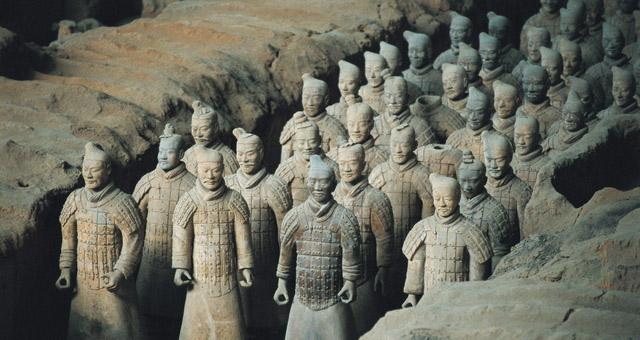
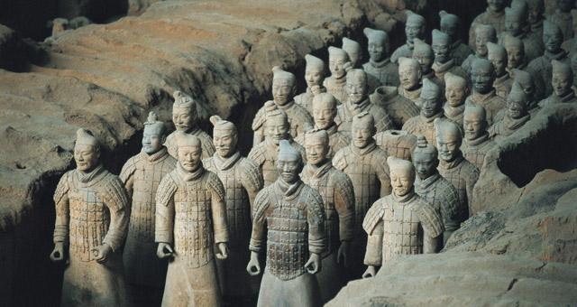
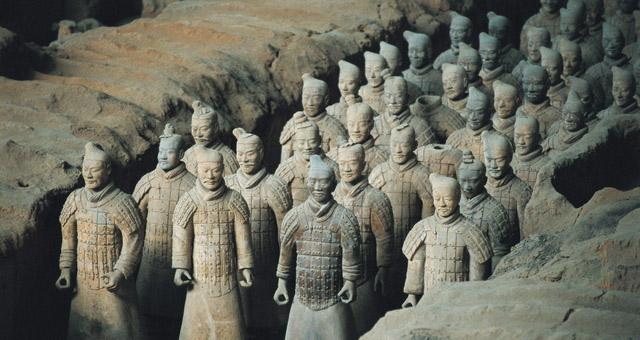

这是我的家乡 陕西西安
这是我一直心心念念的地方啊，它有着十三朝古都的美誉，有豪迈热情的娃儿们，有让人赞不绝口的大唐不夜城，有见证长安到西安的蜕变的古色古香的兵马俑古城墙钟楼，有唐玄奘的大雁塔，有让人垂涎三尺的凉皮肉夹馍羊肉泡馍......这片黄土高原承载了我十八年的美好记忆。愿我和我的家乡都向着更好的方向发展。
善良 热爱 快乐 幸福
羽毛球，虽然没达到专业水平，但平常陪练一起运动一起玩还是没有问题的，一直都很喜欢这项运动，它是我高三是为数不多一直给我带来快乐的物品，至今也还是很想念那些和伙伴单打双打的时光
追综艺，我看的综艺面都很广，有音乐方面，真人秀方面，语言类方面等，综艺带给我的不止有平淡时光里的快乐调剂，还有对一些问题的深刻思考，还会在心情低落时给我安慰，让我重新打起精神
听歌 我平时主要听一些舒缓的轻音乐以及抒情的流行歌，在歌里好像能遇见另一个我，去和生闷气发脾气的自己和解，去给思乡怀旧的自己更多向前走坚定，去给几近放弃的的自己加油打气，总之在歌里我总会得到自愈。
说到兴趣爱好，怎么能少了美食，也许是在陕西长大，我格外爱吃辣，尤其是秘制凉皮，辣子锅盔，川辣火锅...一切辣的食物都是我的最爱。相对的，我对甜食不是很兴趣，经常会感到腻
温和善良，认识的人都认为这是我给他们最深刻的印象。
热爱生活，我始终认为有趣有爱的生活能缓解学习工作带给我们的枯燥，罗曼罗兰曾说过：“真正的英雄主义是看清生活本质后仍然热爱生活。”所以如果你也是个爱生活的的人我想我们可以成为很好朋友。
慢热内向，从小就认生，不知和生人如何快速熟起来，所以使很多人见我的第一印象都是沉默寡言，但如果你和我接触久了后，就会发现我不禁笑点超低，还特别话痨，从日常琐事可以聊到人生理想，总之我不是你刚认识我时的冷漠少言的人，其实内心真的很希望和每个志同道合的你做朋友。

这是我一直心心念念的地方啊，它有着十三朝古都的美誉，有豪迈热情的娃儿们，有让人赞不绝口的大唐不夜城，有见证长安到西安的蜕变的古色古香的兵马俑古城墙钟楼，有唐玄奘的大雁塔，有让人垂涎三尺的凉皮肉夹馍羊肉泡馍......这片黄土高原承载了我十八年的美好记忆。愿我和我的家乡都向着更好的方向发展。
我的父母在本地经营着一家小旅馆，姐姐在杭州从事和计算机有关的工作，他们都是我坚实的靠山温暖的港湾，现在虽然各奔东西分居三地，但那份由亲情汇聚而成的纽带时刻将我们相连。I love my family.